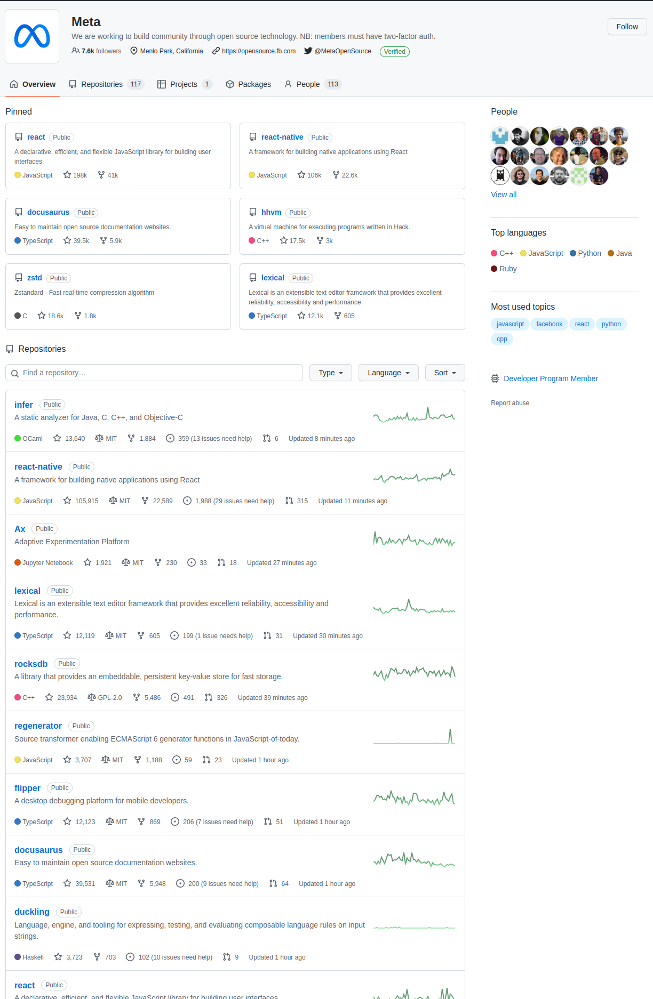

Created: 2022-11-10 Thu 13:48
We’ve written a lot of loops in this course so far. You’re gaining practice and mastery with them, to the point where you might have started to recognize patterns in all these loops.
Some of the types of loops you’ve encountered are:
In the world of production apps, some of these types of loops appear over and over again. Others don’t come up very often at all, but make for good learning exercises.
Today we’re going to look at one particular type of loop that you find all the time in real-world apps: the map operation (number 3 in the preceding list).
We’ll take a look at the mapping operation by deconstructing and generalizing mapping loops, so we can understand the how and the why of using them.
const people = ["Colin", "Kerridene", "Tim"]; const attendanceChecks = []; for (let i = 0; i < people.length; i++) { attendanceChecks.push(`Is ${people[i]} here today?`) } console.log(attendanceChecks)
[ 'Is Colin here today?', 'Is Kerridene here today?', 'Is Tim here today?' ]
Here’s an example using numbers:
const grades = [90, 85, 53, 76]; const curvedGrades = []; for (let i = 0; i < grades.length; i++) { curvedGrades.push(grades[i] + 10); } console.log(curvedGrades);
[ 100, 95, 63, 86 ]
We’ll have to do a little more work this time!
Our task: take the below grades and build a new array of pass/fail statuses.
The business logic is as follows: if a grade is at least 60, the pass/fail status should be “Pass”. Otherwise, it should be “Fail”.
const grades = [90, 85, 53, 76];
What do these map operations share in common?
Breaking it down, in a map operation, we return a new array where we’ve transformed the original values into new ones. In these cases, the transformations were:
Doing it in a loop looks like this:
Mapping operations are extremely common in engineering. Let’s look at some examples!

We generalize code all the time to avoid repeating things. Any loop is a basic generalization of code:
const people = ['Colin', 'Tim', 'Kerridene'] console.log(people[0]) console.log(people[1]) console.log(people[2])
Colin Tim Kerridene
We generalize because we are doing the same thing multiple times, for the reasons we said before, but also because we want to be able to think about what the task is doing, not how it does it.
Loops are all about how: what index we’re starting at, what index we stop at, whether to use a for or a while or a for of loop. Instead, what we want is something expressive that can tell us more cleanly what it is we’re actually doing.
const people = [ { name: { first: 'Kerridene', last: 'Waters' }, age: 28, isAwesome: true, isModest: true, hobbies: ['Biking', 'Horticulture', 'Woodworking'] }, { name: { first: 'Colin', last: 'Jaffe' }, age: 42, isAwesome: true, isModest: false, hobbies: ['Emacs', 'Board Games', 'Writing'] }, { name: { first: 'Tim', last: 'Calhoun' }, age: Infinity, isAwesome: true, isModest: true, hobbies: ['Skiing', 'Hiking', 'Taking Names'] }, ]
const bios = [] for (let i = 0; i < people.length; i++) { const fullName = people[i].name.first + ' ' + people[i].name.last; const hobbies = people[i].hobbies.join(' and ') bios.push(`${fullName} is ${people[i].age} years old and loves ${hobbies}.`) }
console.log(bios);
[ 'Kerridene Waters is 28 years old and loves Biking and Horticulture and Woodworking.', 'Colin Jaffe is 42 years old and loves Emacs and Board Games and Writing.', 'Tim Calhoun is Infinity years old and loves Skiing and Hiking and Taking Names.' ]
const tweets = [ { username: 'dril', text: 'Update from the good time line—Bacion is legal to eat at work thanks to President Banksy in the whitehouse, now known as the star wars house', displayName: 'wint', postId: 2, likes: 3999, replies: 137 }, { username: 'Leemanish', displayName: 'blake', text: 'Sick of having to go to 2 different huts to buy pizza & sunglasses.', postId: 3, likes: 4736, replies: 15 }, { username: 'queer_queenie', displayName: 'Queenie', text: `i hold a gender reveal party. all my relatives wait as i pull off the cake cover. the icing says "gender is a spectrum". it's too late, i have the powerpoint up`, postId: 4, likes: 8349, replies: 132 }, { username: 'phranqueigh', displayName: 'Frankie Zelnick', text: "How dare you call me mentally unstable, on this, the day of my cat's quinceanera.", postId: 5, likes: 3612, replies: 16 } ]; console.log(tweets)
[
{
username: 'dril',
text: 'Update from the good time line—Bacion is legal to eat at work thanks to President Banksy in the whitehouse, now known as the star wars house',
displayName: 'wint',
postId: 2,
likes: 3999,
replies: 137
},
{
username: 'Leemanish',
displayName: 'blake',
text: 'Sick of having to go to 2 different huts to buy pizza & sunglasses.',
postId: 3,
likes: 4736,
replies: 15
},
{
username: 'queer_queenie',
displayName: 'Queenie',
text: `i hold a gender reveal party. all my relatives wait as i pull off the cake cover. the icing says "gender is a spectrum". it's too late, i have the powerpoint up`,
postId: 4,
likes: 8349,
replies: 132
},
{
username: 'phranqueigh',
displayName: 'Frankie Zelnick',
text: "How dare you call me mentally unstable, on this, the day of my cat's quinceanera.",
postId: 5,
likes: 3612,
replies: 16
}
]
const convertNumber = (number) => { if (number < 1000) { return number.toString(); } return (Math.floor(number / 100) / 10).toString() + 'K' }
const getDisplayTweets = (tweet) => (`${tweet.displayName} @${tweet.username} ${tweet.text} ${tweet.likes} Likes ${tweet.replies} Replies`)
const getDisplayTweets = (tweet) => (`${tweet.displayName.blue} @${tweet.username} ${tweet.text} 💙 ${convertNumber(tweet.likes).bold} 🗨 ${convertNumber(tweet.replies).bold} 🔗 Copy Link`)
const tweet = getDisplayTweets(tweets[0]); console.log(tweet);
wint @dril Update from the good time line—Bacion is legal to eat at work thanks to President Banksy in the whitehouse, now known as the star wars house 2139 Likes NaN Replies
const tweetStrings = []; for (let i = 0; i < tweets.length; i++) { const tweet = tweets[i]; const tweetString = `${tweet.displayName} @${tweet.username} ${tweet.text} ${tweet.retweets} Retweets ${tweet.likes} Likes ${tweet.replies} Replies` tweetStrings.push(tweetString); } tweetStrings.forEach((tweetString) => console.log(tweetString + '\n\n'))
wint @dril Update from the good time line—Bacion is legal to eat at work thanks to President Banksy in the whitehouse, now known as the star wars house 1200 Retweets 8200 Likes 28 Replies blake @Leemanish Sick of having to go to 2 different huts to buy pizza & sunglasses. 2900 Retweets 6300 Likes 210 Replies Queenie @queer_queenie i hold a gender reveal party. all my relatives wait as i pull off the cake cover. the icing says "gender is a spectrum". it's too late, i have the powerpoint up 16900 Retweets 70600 Likes 730 Replies Frankie Zelnick @phranqueigh How dare you call me mentally unstable, on this, the day of my cat's quinceanera. 5000 Retweets 9300 Likes 121 Replies
This is a library we’ll pull in to allow us to make our terminal output prettier. We’ll be using it exclusively to get bold text in our tweets.
const colors = require('colors');
Now we can di
const displayTweets = tweets.map(getDisplayTweets); displayTweets.forEach((displayTweet) => console.log(displayTweet + '\n'));